Each point fires one more projectile. With none, the skill fires its usual number.
+1 projectile+# to ProjectilesApplies to the supported skills below.
35 supported skills
Amazon
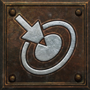
Magic Arrow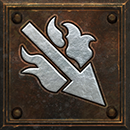
Fire Arrow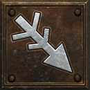
Cold Arrow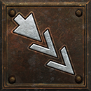
Multiple Shot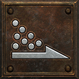
Poison Javelin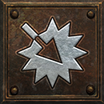
Exploding Arrow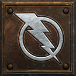
Lightning Bolt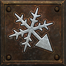
Ice Arrow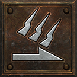
Charged Strike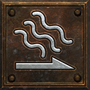
Plague Javelin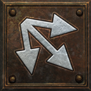
Strafe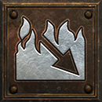
Immolation Arrow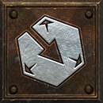
Freezing Arrow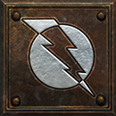
Lightning FurySorceress
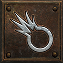
Fire Bolt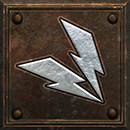
Charged Bolt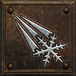
Ice Bolt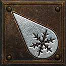
Ice Blast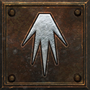
Glacial Spike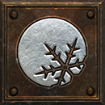
Frozen OrbNecromancer
Paladin
Druid
Assassin
Warlock
Get this effect
Runewords
Cloudburst
Ort → Shael → Um
3 sockets · Bow / Crossbow / Sword / Staff / Scepter / Knife
+1 to ProjectilesRequired level 47Magic & rare modifiers

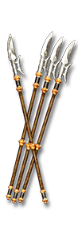
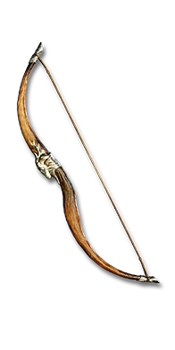
of Multitudes
Magic & rare suffix
+1 to Projectiles- Missile Weapon
- Javelin
- Orb
- Staff
- Wand
- Hand to Hand
- Grimoire
Equipment
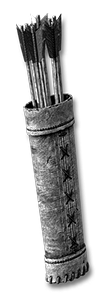
The Unerring Flight
Flight Arrows
+3-5 to ProjectilesRequired level 90The Unerring Flight
Flight Bolts
+3-5 to ProjectilesRequired level 90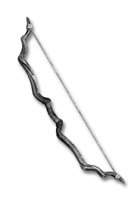
Askari Rimebow
Blade Bow
+1 to ProjectilesRequired level 86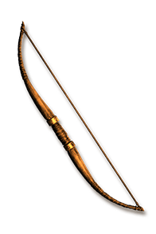
Skovos Emberbow
Spider Bow
+1 to ProjectilesRequired level 86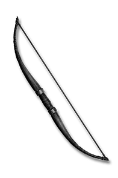
Rogue's Keepsake
Short Bow
+1 to ProjectilesRequired level 12Vizjerei Lens
Glowing Orb
+1 to ProjectilesRequired level 28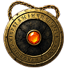
Viz-Jun's Last Spark
Amulet
+2 to ProjectilesRequired level 88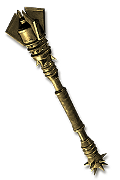
Censer of Zakarum
Caduceus
+2 to ProjectilesRequired level 88
Storm Brood
Heavenly Stone
+6-8 to ProjectilesRequired level 85The Unwritten Storm
Graven Arrows
+1 to ProjectilesRequired level 54The Bell of Bone
Graven Bolts
+1-2 to ProjectilesRequired level 90


Binding Blades
+1, +1-2 or +2 to Projectiles40 item variants
- Flamebrand+1 to Projectiles · Required level 72
- Pyrebrand+1-2 to Projectiles · Required level 85
- Winterfang+1 to Projectiles · Required level 72
- Winter's Ruin+1-2 to Projectiles · Required level 85
- Thunderfang+1 to Projectiles · Required level 72
- Skyfall+1-2 to Projectiles · Required level 85
- Gravecarver+1 to Projectiles · Required level 72
- Death's Due+1-2 to Projectiles · Required level 85
- Skycleaver+1 to Projectiles · Required level 72
- Heaven's Sunder+1-2 to Projectiles · Required level 85
- Tribunal+1 to Projectiles · Required level 72
- Final Sentence+1-2 to Projectiles · Required level 85
- Cursebearer+1 to Projectiles · Required level 72
- Damnation+1-2 to Projectiles · Required level 85
- Hidden Hand+1 to Projectiles · Required level 72
- Last Betrayal+1-2 to Projectiles · Required level 85
- Pyrebrand (Perfect)+2 to Projectiles · Required level 85
- Winter's Ruin (Perfect)+2 to Projectiles · Required level 85
- Skyfall (Perfect)+2 to Projectiles · Required level 85
- Death's Due (Perfect)+2 to Projectiles · Required level 85
- Heaven's Sunder (Perfect)+2 to Projectiles · Required level 85
- Final Sentence (Perfect)+2 to Projectiles · Required level 85
- Damnation (Perfect)+2 to Projectiles · Required level 85
- Last Betrayal (Perfect)+2 to Projectiles · Required level 85
- Pyrebrand (Spell level 20)+1-2 to Projectiles · Required level 85
- Pyrebrand (Spell level 24)+1-2 to Projectiles · Required level 85
- Winter's Ruin (Spell level 20)+1-2 to Projectiles · Required level 85
- Winter's Ruin (Spell level 24)+1-2 to Projectiles · Required level 85
- Skyfall (Spell level 20)+1-2 to Projectiles · Required level 85
- Skyfall (Spell level 24)+1-2 to Projectiles · Required level 85
- Death's Due (Spell level 20)+1-2 to Projectiles · Required level 85
- Death's Due (Spell level 24)+1-2 to Projectiles · Required level 85
- Heaven's Sunder (Spell level 20)+1-2 to Projectiles · Required level 85
- Heaven's Sunder (Spell level 24)+1-2 to Projectiles · Required level 85
- Final Sentence (Spell level 20)+1-2 to Projectiles · Required level 85
- Final Sentence (Spell level 24)+1-2 to Projectiles · Required level 85
- Damnation (Spell level 20)+1-2 to Projectiles · Required level 85
- Damnation (Spell level 24)+1-2 to Projectiles · Required level 85
- Last Betrayal (Spell level 20)+1-2 to Projectiles · Required level 85
- Last Betrayal (Spell level 24)+1-2 to Projectiles · Required level 85
Oil & gem crafts


Black Oil
+ Perfect Diamond
- Grimoire / Bow / Crossbow / Hand to Hand / Orb / Staff / Wand
- +1 to Projectiles